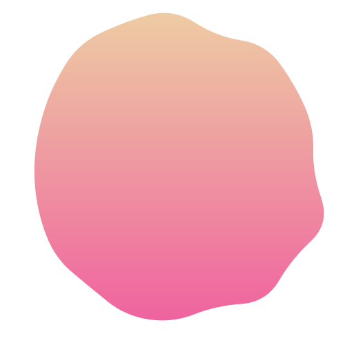
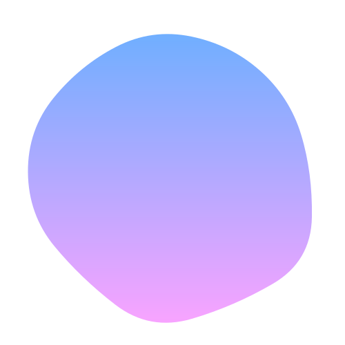
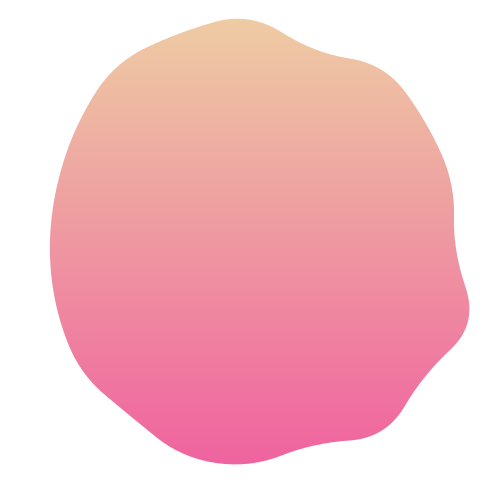
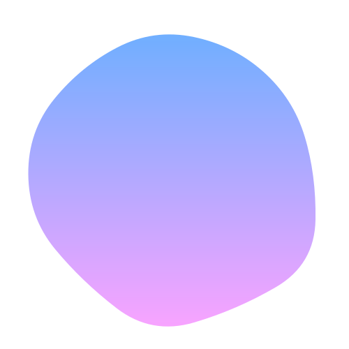

01
最初はコンポジションを作成します。今回は1280px×720pxの30fps、デュレーションは5秒で作成します。 (デュレーションはトランジションの前後のシーンの長さに合わせてお好みで変更してください)
 





01
02
03
最初はコンポジションを作成します。今回は1280px×720pxの30fps、デュレーションは5秒で作成します。 (デュレーションはトランジションの前後のシーンの長さに合わせてお好みで変更してください)
まず、ホワイト平面を作成しその上にトランジションで繋ぎたい映像を並べておきます。 今回は「トランジションscene1」と「TRANSITIONscene2」というテキストを使用しています。
ここでトランジション用の平面を２つ作っておきます。色はお好みで変更してください。ちなみにcmd+Yで簡単に作れます。


01
02
03
エフェクトのトランジションからCC Grid Wipeを一番上の平面レイヤーに適応します。 最初に「reverse transiton」にチェックを入れておきます。次に「Competiton」に キーフレームを打っていきます。1秒地点で100%、2秒地点で0%となるようにキーフレームを打ちます。 (fn+)F9でイージーイーズもつけておきましょう。
ここで、もう一つエフェクトをつけていきます。エフェクトのトランジションからCC Jawsを 先ほどのレイヤーに適応させます。「Height」を0%にしておくことで帯を平らにすることができます。 こちらも「Competiton」にキーフレームを打っていきます。2秒から5フレーム前の地点で0%、 そこから25フレーム後の地点で100%となるようキーフレームを打ちます。イージーイーズもつけておきましょう。
今回はグラフエディタも使ってみましょう。この際「値グラフを編集」にチェックが入っていることを確認してください。 (グラフ上で左クリックで確認できます。)黄色いバーの角度を調節して画像のようなカーブになるように調整してみましょう。 そうするとはじめは速く、終わりはゆっくりとしたアニメーションになります。
01
02
03
最後にもう一つアニメーションを加えておきましょう。 一つ下の平面レイヤーに先程と同じようにエフェクトのトランジションからCC jawsを適応させましょう。 「heignt」を0%にして、「Competiton」に先程と同じキーフレームを打ちます。この時、グラフエディタも同じように調整しておきましょう。
キーフレームを２つ選択し、後ろに15フレームほどずらしておきましょう。トランジションの始め、 下の平面レイヤーがかぶってしまっているので前半部分をカットしておきましょう。これで完成です。